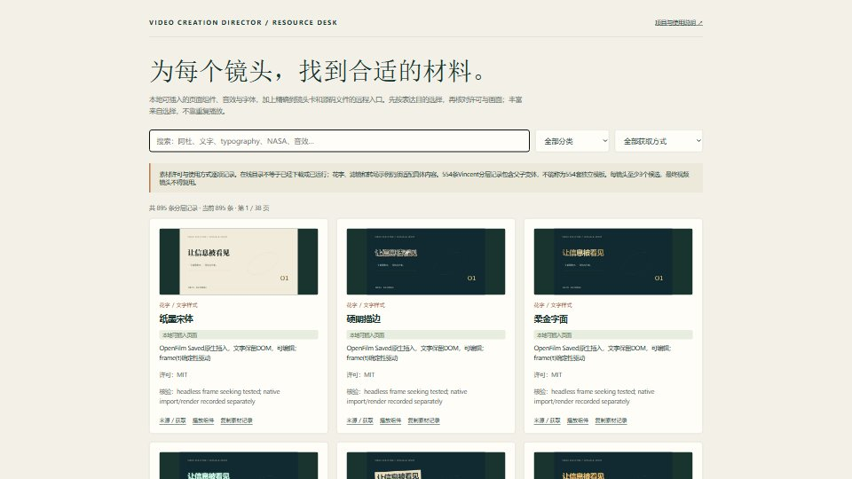

DESIGN STUDY / 02.10
让信息
被看见。
用真实素材建立可信度，用字体、空间和运动组织信息。一个视频入口，完成从想法到可编辑成片的制作过程。
01 / 横屏 · 信息有层次，镜头有连接
1920 × 1080 / 30 FPS / 15 S / SILENT原创 Remotion 设计验证场：宋黑搭配、语义分组、结构图形与共享视觉锚点。此示例按静音设计。
FROM REFERENCE TO OUTPUT
少量输入，
完整的制作过程。
01
让素材承担信息
主动检索事实、官方案例、真实界面、图像与音轨。核对出处后下载，并应用到具体镜头。
02
把美术方向落到参数
字体角色、语义层级、颜色、阅读窗口与转场锚点，共同服务于观众理解。
03
以参考和证据返修
比较真实演示，先做代表性片段，修复最重要差距，再检查完整成片。技术通过不代替看审和听审。
素材工作台 / 从表达目的开始找
895 条分层记录 / 27 个原创页面
视频、图片、声音、贴纸、字体、文字动画、特效、滤镜与转场。保留获取方式和核验范围，未下载的远程内容给出精确入口。进入素材库 → · 原生组件导出样片（4秒，无声）
这次实际验证了什么
2.1新增OpenFilm原生素材导入、后台Agent修改保留手改、30秒有声渲染与5个声音事件的数值对齐。27个原创页面经过无头检查，代表页实际导出。前台聊天兼容性和完整声画评审的限制见验证记录。
两种画幅均已完成真实渲染与完整解码；检查了中文字符覆盖、代表帧与转场中段。示例源码、字体许可和验证记录均在仓库。
研究覆盖阿杜28项模板页面，以及Vincent的58个公开仓库；前后两组共六条指定教程已取得媒体并做全音轨自动转写和关键帧核验。没有将抽帧或自动转写称为完整连续声画评审。
当前示例未给出“优秀总分”。每次创作都要按真实内容与具体参考验收，不能以安装一个Skill保证任意作品一次达到大师水平。